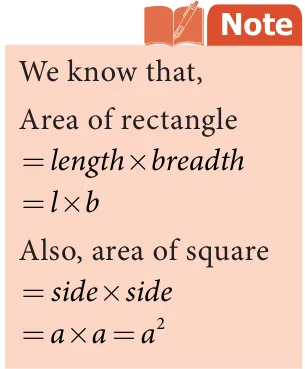
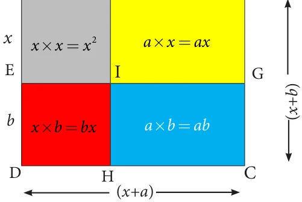
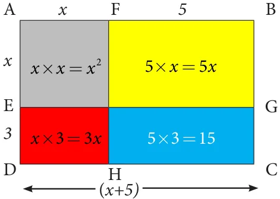
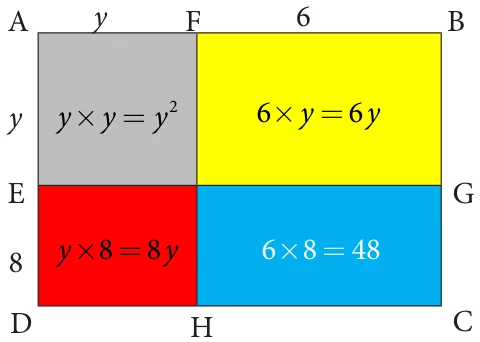
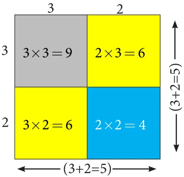
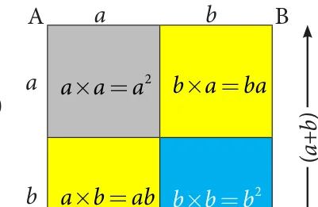
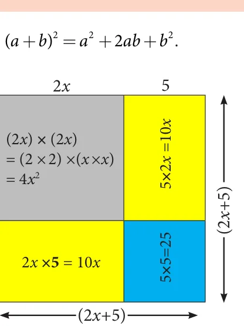
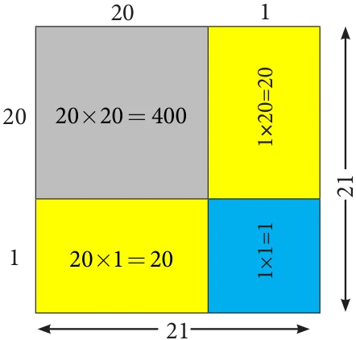
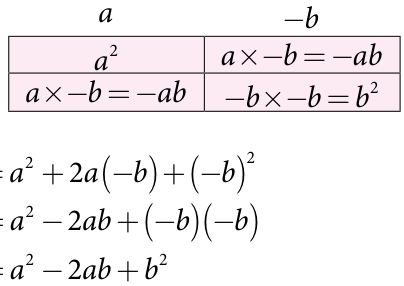
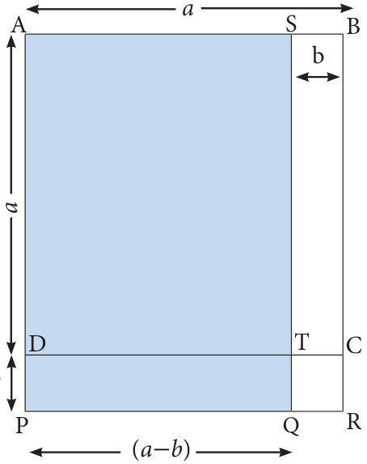

<!DOCTYPE html>
<html lang="en">
<head>
<meta charset="UTF-8">
<meta name="viewport" content="width=device-width,initial-scale=1">
<title>3.3 Geometrical proof of Identities — Algebra</title>
<meta name="description" content="Class 7 Mathematics · Term 3 · Algebra · 3.3 Geometrical proof of Identities">
<link rel="icon" href="data:image/svg+xml,<svg xmlns='http://www.w3.org/2000/svg' viewBox='0 0 100 100'><text y='.9em' font-size='90'>📘</text></svg>">
<link rel="stylesheet" href="../../../assets/book.css">
<link rel="stylesheet" href="https://cdn.jsdelivr.net/npm/katex@0.16.11/dist/katex.min.css" crossorigin="anonymous">
</head>
<body>
<header class="topbar">
<div class="topbar-in">
  <div class="crumb">
    <span class="c1"><a href="../../../index.html">Library</a> · <a href="../../index.html">Class 7 Mathematics · Term 3</a></span>
    <span class="c2">Algebra · 3.3 Geometrical proof of Identities</span>
  </div>
  <a class="tb-btn" data-nav="prev" href="../../03-algebra/02-geometrical-approach-to-multiplication-of-monomials-3.2/index.html" title="3.2 Geometrical Approach to Multiplication of Monomials">←</a>
  <details class="drawer"><summary class="tb-btn" title="Sections in this chapter">☰</summary>
<div class="drawer-panel"><div class="dh">Algebra</div><a href="../01-chapter-opener/index.html">Chapter opener; 3.1 Introduction to Identities</a><a href="../02-geometrical-approach-to-multiplication-of-monomials-3.2/index.html">3.2 Geometrical Approach to Multiplication of Monomials</a><a href="../03-geometrical-proof-of-identities-3.3/index.html" aria-current="page">3.3 Geometrical proof of Identities</a><a href="../04-factorisation-using-identities-3.4/index.html">3.4 Factorisation using identities</a><a href="../05-exercise-3.1/index.html">Exercise 3.1</a><a href="../06-inequations-3.5/index.html">3.5 Inequations</a><a href="../07-exercise-3.2/index.html">Exercise 3.2</a><a href="../08-exercise-3.3/index.html">Exercise 3.3</a><a href="../09-summary/index.html">Summary</a><a href="../10-ict-corner/index.html">ICT Corner</a></div></details>
  <a class="tb-btn" data-nav="next" href="../../03-algebra/04-factorisation-using-identities-3.4/index.html" title="3.4 Factorisation using identities">→</a>
  <button class="tb-btn" data-theme-toggle title="Toggle light / dark" aria-label="Toggle light or dark theme">◐</button>
</div>
<div class="progress"><span style="width:44.1%"></span></div>
</header>
<main class="wrap">
<div class="sec-head">
  <p class="eyebrow"><a href="../index.html">Chapter 3 · Algebra</a></p>
  <h1>3.3 Geometrical proof of Identities</h1>
  <p class="sec-meta">Textbook pages 5–11 · 15 figures</p>
</div>
<article class="prose">
<p>By using this concept of multiplication of monomials, let us try to prove the identities geometrically, which are very much useful in solving algebraic problems.</p>
<div class="mathblock"><p>3.3.1 Identity-1: (x + a)(x \(+b)= x + x(a+b)+\) ab</p></div>
<figure class="fig table-fig side-fig"><figcaption>Fig. 3.8</figcaption></figure>
<p>Consider four regions. One region is square shaped with dimension 3´3 (Grey). Also, the other three regions are rectangle in shape with dimensions 4´3 (yellow), 3´2 (red) and 4´2 (Blue). Arrange these four regions to form a rectangular shape as shown in the Fig. 3.8.</p>
<p>By observing Fig. 3.8, we can note that,</p>
<p>Area of the bigger rectangle = Area of a square (Grey ) + Area of Three rectangles</p>
<div class="mathblock"><p>\((3+4)(3+2)=(3 \times 3)+(4 \times 3)+(3 \times 2)+(4 \times 2) (3+4)(3+2)=(3 \times 3)+3 \times (4+2)+(4 \times 2) ...(1)\)</p></div>
<p>Where, LHS is \((3+4)(3+2)=7 \times 5=35\)</p>
<figure class="fig side-fig"></figure>
<div class="mathblock"><p>RHS is \((3 \times 3)+3(4+2)+(4 \times 2)=9+(3 \times 6)+8\)</p><p>=9+18+8=35</p></div>
<p>Therefore, \(LHS = RHS\). In the similar way as explained above, let us check for another set of four regions as shown in the Fig. 3.9.</p>
<figure class="fig table-fig"><figcaption>Fig. 3.9</figcaption></figure>
<p>By observing Fig. 3.9, we can note that,</p>
<p>Area of the bigger rectangle = Area of a square (Grey ) + Area of Three rectangles</p>
<div class="mathblock"><p>\((5+4) (5+1) = (5 \times 5) + (5 \times 1) + (5 \times 4) + (1 \times 4) (5+4) (5+1) = (5 \times 5) + 5(1+4) + (1 \times 4) ...(2)\)</p></div>
<p>Where, LHS is \((5+1)(5+4)=6 \times 9=54\)</p>
<div class="mathblock"><p>RHS is \(5 +5(1+4)+(1 \times 4)=25+(5 \times 5)+4 =25+25+4 =54\)</p></div>
<p>Therefore, \(LHS = RHS\). Thus, equation (1) and (2) is true for given set of any three values. By generalising those three values as ‘x’, ‘a’ and ‘b’ we get, (x \(+a)(x +b)=(x \times x)+\) x(a \(+b)+(a \times\) b)</p>
<figure class="fig side-fig"></figure>
<p>That is, (x \(+a)(x +b)= x +\) x(a +b)+ab</p>
<p>Hence, (x \(+a)(x +b)= x +\) x(a +b)+ab is an identity. Now, let us prove this identity, geometrically.</p>
<figure class="fig table-fig"><figcaption>Fig. 3.10</figcaption></figure>
<p>Let one side of a rectangle be (x +a and the other side be (x \(+ b\) units. Area of the rectangle \(ABCD =\) area of the square \(AFIE +\) area of the rectangle FBGI Then, From the Fig. 3.10, we can see that thethe total area of the rectangle ABCD) =length \(\times\) breadth=(x) +a)(x+b) ...(3)</p>
<p>+ area of the rectangle \(EIHD +\) area of the rectangle IGCH</p>
<p>\(= x +ax +bx +ab\)</p>
<div class="mathblock"><p>\(= x +\) x(a +b)+ab ...(4)</p></div>
<p>From (3) and (4) we get, (x \(+a)(x +b)= x +\) x(a +b)+ab</p>
<p>Hence, (x \(+a)(x +b)= x +\) x(a +b)+ab is an identity.</p>
<h4 class="callout-h" id="s-note">Note</h4>
<ul class="qlist">
<li><span class="mk">(i)</span><span class="lt">In case if \(b = - b\) then the identity is (x \(+a)(x +( - b))= x +\) x(a \(+( - b))+a( -\) b)</span></li>
</ul>
<aside class="sidenote"><p>(x \(+a)(x - b)= x +\) x(a - b) - ab</p><p>2</p></aside>
<ul class="qlist">
<li><span class="mk">(ii)</span><span class="lt">If \(a = - a\) then the identity is (x \(+( -\) a))(x \(+b)= x +\) x(( \(- a)+b)+( -\) a)b</span></li>
</ul>
<p>(x - a)(x \(+b)= x +\) x(b - a) - ab</p>
<ul class="qlist">
<li><span class="mk">(iii)</span><span class="lt">If \(a = - a\) and \(b = - b\) then the identity is</span></li>
</ul>
<p>(x \(+( -\) a))(x \(+( - b))= x +\) x(( \(- a)+( - b))+( -\) a)( - b)</p>
<p>(x - a)(x \(- b)= x -\) x(a +b)+ab</p>
<p>Solution +</p>
<p>Example 3.1 Simplify the following using the identity (x \(+a)(x +b)= x +\) x(a +b)+ab :</p>
<ul class="qlist">
<li><span class="mk">(i)</span><span class="lt">(x \(+ 3)(x + 5)\) (ii) (y \(+ 6)(y 8)\) (iii) 43 x 36</span></li>
</ul>
<figure class="fig table-fig"><figcaption>Fig. 3.11</figcaption></figure>
<ul class="qlist">
<li><span class="mk">(i)</span><span class="lt">(x \(+ 3)(x + 5)\)</span></li>
</ul>
<p>Let us represent the expression geometrically, as shown in the Fig. 3.11.</p>
<p>In the rectangle with length (x +5) and breadth (x +3), we get,</p>
<p>Area of bigger rectangle = Area of a square + Area of three rectangles</p>
<p>Therefore,</p>
<div class="mathblock"><p>(x \(+3)(x +5)= x +5x +3x +15\)</p></div>
<div class="mathblock"><p>\(= x +(5+3)x +15\)</p></div>
<div class="mathblock"><p>\(= x +8x +15\) .</p></div>
<ul class="qlist">
<li><span class="mk">(ii)</span><span class="lt">(y \(+ 6)(y + 8)\)</span></li>
</ul>
<p>Let us represent the expression geometrically, as shown in Fig. 3.12. In the rectangle with length (y +6) and breadth (y +8) units, we get,</p>
<p>Area of bigger rectangle = Area of square + Area of three rectangles</p>
<p>Therefore,</p>
<figure class="fig table-fig"></figure>
<div class="mathblock"><p>(y \(+6)(y +8)= y +6y +8y +48\)</p></div>
<div class="mathblock"><p>(y \(+6)(y +8)= y +(6+8)y +48\)</p></div>
<div class="mathblock"><p>\(= y +14y +48\)</p></div>
<ul class="qlist">
<li><span class="mk">(iii)</span><span class="lt">\(43 \times 36=(40+3) \times (40 - 4)\)</span></li>
</ul>
<p>We know the identity</p>
<p>(x \(+a)(x +b)= x +\) x(a +b)+ab</p>
<div class="mathblock"><p>(y+6)</p></div>
<p>Taking, \(x = 40\), a=3 and \(b= - 4\), we get Fig. 3.12</p>
<div class="mathblock"><p>\((40+3)(40 - 4)= 40 +40(3 - 4)+3( - 4)\)</p></div>
<div class="mathblock"><p>\(=1600+40( - 1) - 12 =1600 - 40 - 12 =1600 - 52\)</p><p>Therefore, \(43 \times 36=1548\) .</p></div>
<figure class="fig table-fig side-fig"></figure>
<div class="mathblock"><p>3.3.2 Identity-2: \((a+b) = a + 2ab+b\)</p></div>
<p>Consider four regions. Two square shaped regions with the dimensions of \(3 \times 3\) (Grey) and \(2 \times 2\) (Blue). Also, there are two rectangle shaped regions and both are in the dimension of \(3 \times 2\) (yellow).</p>
<p>Arrange them in a square shape as shown in the Fig. 3.13.</p>
<p>By observing the Fig. 3.13, we can note that Fig. 3.13</p>
<p>Area of the bigger square = Area of two small squares + Area of two rectangles.</p>
<div class="mathblock"><p>\((3+2) =3 +(2 \times 3)+(3 \times 2)+2 =3 +(3 \times )+( \times )+\) [since, \(2 \times 3 = 3 \times 2]\)</p></div>
<figure class="fig table-fig side-fig"></figure>
<div class="mathblock"><p>Therefore, \((3+2) =3 +2 \times (3 \times 2)+2\)</p></div>
<div class="mathblock"><p>where, L.H.S is \((3+2) =5 =25 ...(1)\)</p></div>
<div class="mathblock"><p>R.H.S is \(3 +2 \times (3 \times 2)+2 =9+12+4 =\) . ...(2)</p></div>
<p>From (1) and (2), L.H.S = R.H.S. Now, we can prove this for the variables a and b. Let us take a square ABCD of side (a+b , hence its</p>
<p>area is (a \(+b)(a +b)=(a +b)\) ) By observing the Fig. 3.14, Fig. 3.14</p>
<p>Area of the bigger square \(ABCD =\) Area of two small squares (Grey and blue) + Area of two rectangles (yellow).</p>
<p>So, (a \(+b) =a +ba +ab+b\)</p>
<p>\(=a +ab+ab+b\) (since, ba =ab )</p>
<div class="mathblock"><p>(a \(+b) =a +2ab+b\)</p></div>
<p>Hence proved.</p>
<p>(x +a (x \(+a == x +\) x(a \(+a)+a \times a\)</p>
<h4 class="callout-h" id="s-note">Note</h4>
<div class="mathblock"><p>)(x \(+a)) = x + x(2a)+a\)</p></div>
<p>If, we substitute b a in the identity (x \(+a)(x +b)= x +\) x(a +b)+ab , we get,</p>
<p>(x \(+a) = x + 2ax +a\) , which is similar to the identity (a + ) \(= + ab+\) .</p>
<figure class="fig table-fig side-fig"></figure>
<p>Example 3.2 Simplify the following using the identity ( + ) \(= + ab+\) .</p>
<ul class="qlist">
<li><span class="mk">(i)</span><span class="lt">(2x +5) (ii) 21</span></li>
</ul>
<h4 class="callout-h" id="s-solution">Solution</h4>
<ul class="qlist">
<li><span class="mk">(i)</span><span class="lt">(2x +5)</span></li>
</ul>
<p>Let the side of the square be 2x +5 units.</p>
<p>Then its area is side´side , that is (2x +5) .</p>
<p>The geometrical representation of the given expression is as shown in Fig. 3.15.</p>
<p>bigger squareArea of the = Area of two squares + Area of two rectangles.</p>
<div class="mathblock"><p>\((2x +5) = 4x +25+10x +10x\) Fig. 3.15</p></div>
<p>\(= 4x +(10+10)x +25\) (Adding like terms)</p>
<div class="mathblock"><p>\(= 4x +20x +25\) .</p></div>
<figure class="fig table-fig side-fig"></figure>
<ul class="qlist">
<li><span class="mk">(ii)</span><span class="lt">21</span></li>
</ul>
<p>Let the side of the square be 21. Hence, its</p>
<p>area is 21 .</p>
<p>Consider 21 as (20+1) which is one of the way to represent it geometrically as shown in Fig. 3.16.</p>
<p>Now,</p>
<p>bigger squareArea of the = Area of two squares + Area of two rectangles.</p>
<p>_{2} Fig. 3.16</p>
<div class="mathblock"><p>\(21 = 400+1+20+20=441\).</p></div>
<p>Aliter method:</p>
<figure class="fig side-fig"></figure>
<p>We know the identity, (a \(+b) =(a +b)(a +b)\)</p>
<div class="mathblock"><p>\(=a +2ab+b\)</p></div>
<p>To find the value of 21 ,</p>
<div class="mathblock"><p>We take, \(21^{2} = (20+1)^{2}\)</p><p>\(= (20+1)(20+1)\)</p></div>
<p>Here, \(a = 20\) and \(b = 1\). Therefore,</p>
<div class="mathblock"><p>\(a + 2ab + b =20 +2 \times 20 \times 1+1\)</p></div>
<div class="mathblock"><p>\(= 400+40+1 = 441\).</p><p>3.3.3 Identity-3: (a - b) \(= a - 2ab +b\)</p></div>
<p>When we replace ‘b’ by ‘ - b’ in ‘identity-2’, we - get a new identity.</p>
<figure class="fig side-fig"></figure>
<p>We know that, (a \(+b) =a +2ab+b\) Taking ‘b’ as ‘ - b’ in ‘identity-2’, we get, a \(+( -\) )= \(\frac{a \times - = -\) bab}{a+2a( \(- b)+( -\) } ) ( - ) \(= - ab+( -\) )( - ) Therefore, ( - ) \(= - ab+\)</p>
<p>\(2 2 2 -\)</p>
<p>Note that, when we change the sign of b, the sign of 2ab (second term) alone is changed.</p>
<p>Example 3.3 Using the identity (a - b) \(=a - 2ab+b\) , simplify the following:</p>
<ul class="qlist">
<li><span class="mk">(i)</span><span class="lt">(3x -5y) (ii) 47</span></li>
</ul>
<h4 class="callout-h" id="s-solution">Solution</h4>
<div class="mathblock"><p>\((3x -5=y) (3x) = - \times 2 (3x) \times (5y)+(5y)\)</p></div>
<ul class="qlist">
<li><span class="mk">(i)</span><span class="lt">(3x -5y)</span></li>
</ul>
<div class="mathblock"><p>\(==3 \times x - (2 \times 3 \times 5)xy +(5 \times y\) )</p></div>
<p>Put a 3x and b 5y in the identity (a - b) \(=a - 2ab+b\) , we get,</p>
<div class="mathblock"><p>\((50 - 3) =50 - \times 2 50 \times =3+3 = 2500 - 300 + 9 == 2509 - 300 = 2209\).</p><p>\(=9x - 30xy +25y\) .</p></div>
<ul class="qlist">
<li><span class="mk">(ii)</span><span class="lt">\(47 =(50 - 3)\) , substituting a 50 and b 3 in the identity (a - b) \(=a - 2ab+b\) , we get,</span></li>
</ul>
<div class="mathblock"><p>3.3.4 Identity-4: (a + b)(a \(- b)= a - b\)</p></div>
<p>So, area of square \(ABCD == a .=\) Also, SB DP b. Area of the rectangle \(SBCT = =\) ab. Similarly, area of the rectangle \(DPRC =\) ab.</p>
<figure class="fig table-fig side-fig"></figure>
<p>In the given figure, AB AD a.</p>
<p>Also, area of the square \(TQRC b .=\)</p>
<p>Area of the rectangle \(DPQT =ab - b\) . Now, \(AS = PQ =\) (a - b) and \(AP = SQ = (= a +\) b). APQS (the shaded Hence, area of the rectangle = area of square \(ABCD -\) area of rectangle STCB rectangle) + area of rectangle DPQT Fig. 3.17</p>
<p>\(= a -\) ab + (ab \(- b\) )</p>
<figure class="fig side-fig"></figure>
<p>\(= a -\) ab + ab \(- b\)</p>
<p>\(= a - b\)</p>
<p>Hence, (a + b) (a - b) \(= a - b\)</p>
<ul class="qlist">
<li><span class="mk">(i)</span><span class="lt">\((3x + 4)(3x - 4)\) (ii) \(53 \times 47\). =</span></li>
</ul>
<p>Example 3.4 Simplify by using the identity (a + b)(a - b) a -b .</p>
<h4 class="callout-h" id="s-solution">Solution</h4>
<div class="mathblock"><p>\((3x + 4)(3x - 4) =(3x) - 4 (3^{2} \times =x^{2}) - 16==9x^{2} - 16\) .</p></div>
<ul class="qlist">
<li><span class="mk">(i)</span><span class="lt">(3x \(+ 4)(3x - 4)\)</span></li>
</ul>
<p>Substitute, a 3x and b 4 in the identity (a \(+b) \times\) (a \(- b)=a - b\) , we get,</p>
<p>Take, \(a = 50\) and b 3,</p>
<p>Substituting the values of ‘a’ and ‘b’ in the identity \((= = a +\) b)(a - b) \(= a - b\) ), we get,</p>
<ul class="qlist">
<li><span class="mk">(ii)</span><span class="lt">\(53 \times 47 (50 + 3) \times (50 - 3)\).</span></li>
</ul>
<div class="mathblock"><p>\(= 2491\).</p><p>\(=50 - 3\)</p></div>
<p>= Try this</p>
<p>\(2500 - 9\)</p>
<p>Consider a square shaped paddy field with side of 48 m. A pathway with uniform breadth is surrounded the square field and the length of the outer side is 52 m. Can you find the area of the pathway by using identities?</p>
</article>
<nav class="pager"><a class="" data-nav="prev" href="../../03-algebra/02-geometrical-approach-to-multiplication-of-monomials-3.2/index.html"><span class="dir">← Previous</span><span class="t">3.2 Geometrical Approach to Multiplication of Monomials</span><span class="ch">Algebra</span></a><a class="nx" data-nav="next" href="../../03-algebra/04-factorisation-using-identities-3.4/index.html"><span class="dir">Next →</span><span class="t">3.4 Factorisation using identities</span><span class="ch">Algebra</span></a></nav>
</main><footer class="site">Generated from the source textbook PDFs · text, figures and exercises belong to their respective publishers.</footer><script defer src="https://cdn.jsdelivr.net/npm/katex@0.16.11/dist/katex.min.js" crossorigin="anonymous"></script>
<script defer src="https://cdn.jsdelivr.net/npm/katex@0.16.11/dist/contrib/auto-render.min.js" crossorigin="anonymous"
  onload="renderMathInElement(document.body,{delimiters:[
    {left:'\\(',right:'\\)',display:false},
    {left:'$$',right:'$$',display:true},
    {left:'\\[',right:'\\]',display:true}],throwOnError:false,ignoredTags:['script','noscript','style','textarea','pre','code']})"></script>
<script src="../../../assets/book.js"></script>
<script defer src="../../../../assets/search.js?v=1789782769"></script>
<script defer src="../../../../assets/screenshot.js?v=2"></script>
</body>
</html>
